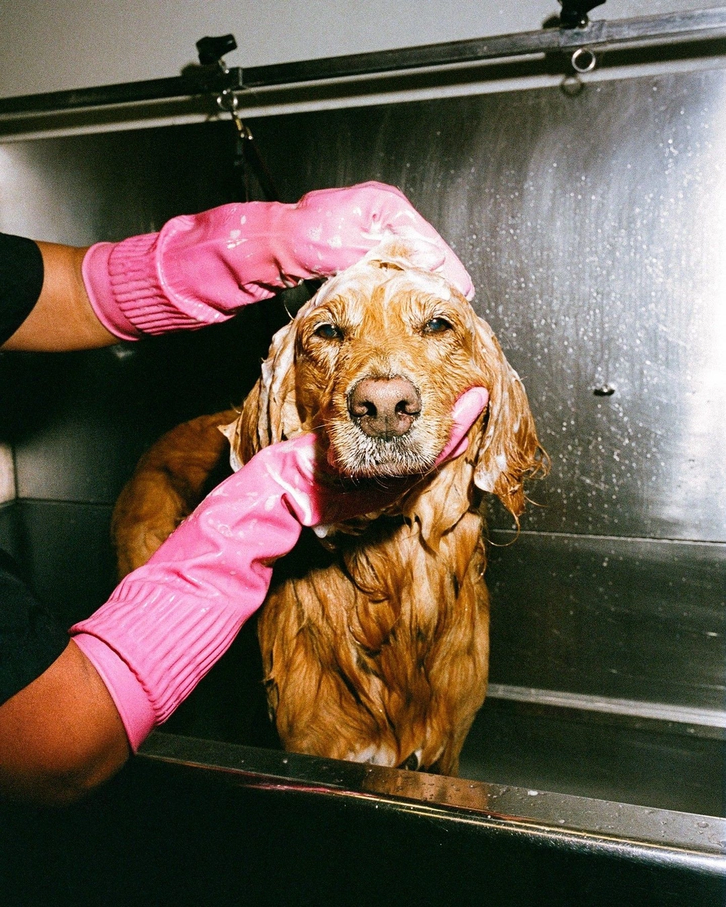
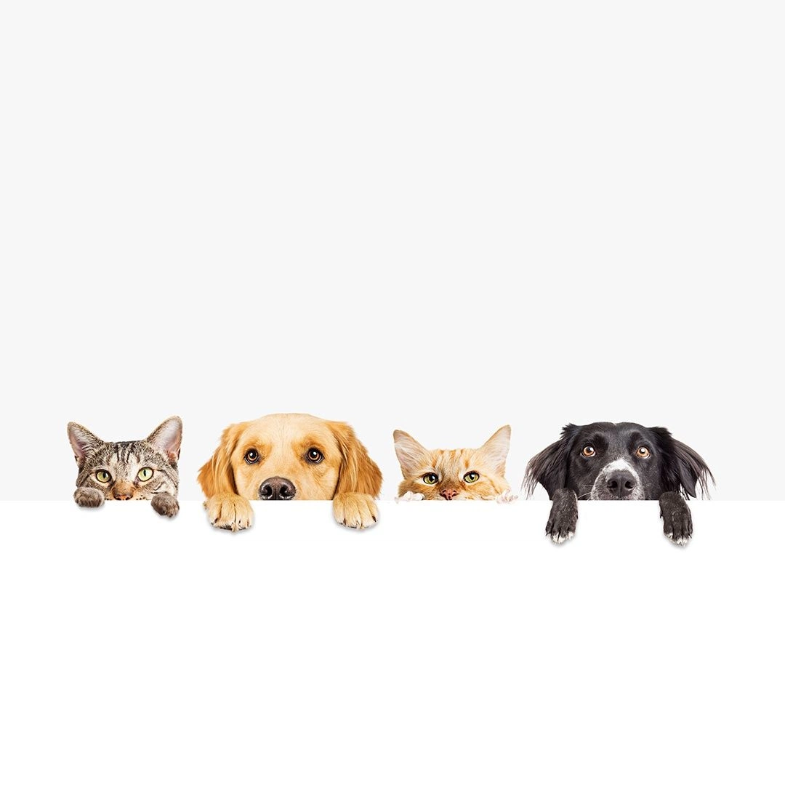
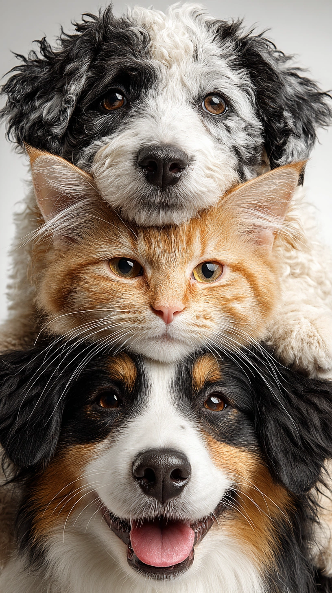

Charlie was quiet on arrival.
With a warm foster home and gentle routines, he learned to trust again and now sleeps at the foot of his family’s bed every night.
The best part of the work
“Milo taught us that the shyest hello can become the loudest love.”— The Jacobs family

“We came to foster for two weeks. Six months later, she owns the sofa.”— Naledi & Sam
More happy tails

With a warm foster home and gentle routines, he learned to trust again and now sleeps at the foot of his family’s bed every night.

She arrived nervous and underweight, but with consistent care and social support, she blossomed into a joyful companion who adores the garden.
From uncertain beginnings to daily walks, playtime, and cuddles, Ollie now brings warmth and laughter to everyone around him.
Each success story starts with patience, trust, and the right forever home.
A temporary home can transform a scared animal into a confident companion.
When people show up, every animal has a better chance of being seen and saved.